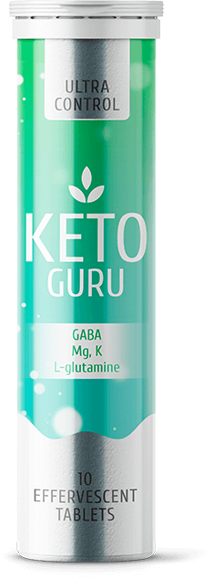
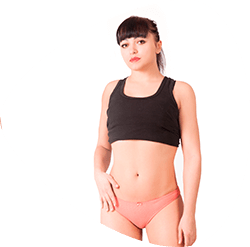
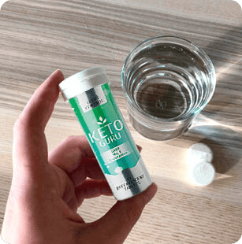
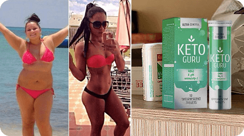
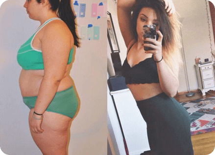
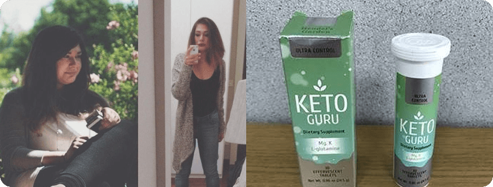
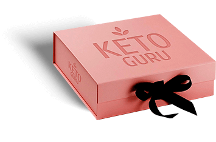
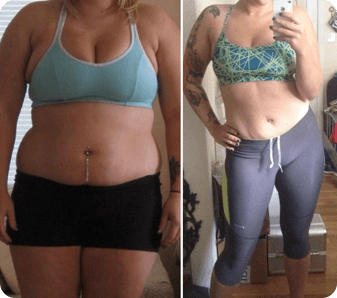

Диеты
и спорт - самые неэффективные методы для
похудения!
Считается, что занятия спортом и диета быстро сжигают жир. Специалисты доказали, что это самые неэффективные методы
-
Недостатки диет:
-
Чувство голода, еда по часам
-
Отказ от любимых продуктов и блюд
-
Вероятность срыва — 95%
-
После завершения диеты вес возвращается
-
Сжигается мышечная масса, а не жир
-
Недостатки спорта:
-
Посещение спортзала 3-4 раза в неделю
-
Противопоказания определенным видам нагрузок при избыточной массе тела
-
Большая нагрузка на суставы и мышцы
-
Низкая
эффективность — результаты заметны через 4-6 недель
Программа безопасного снижения веса по
принципу кето - диеты
Программа безопасного снижения веса по
принципу кето - диеты

-
Эффективно
Сброшенные килограммы не возвращаются
-
Быстро
Первые результаты уже через несколько дней
-
Безопасно
Без вреда для здоровья, без срывов
Узнайте, не пора ли вам худеть - внесите свои данные в поля калькулятора
-
ИМТ больше 25
У вас избыточная масса тела. Вес срочно нуждается в коррекции. Не откладывайте похудение — начните путь к стройной фигуре прямо сейчас вместе с Keto Guru.
-

ИМТ 18-25
Вес в пределах нормы, присутствует склонность к полноте. Чтобы не набрать лишние килограммы и поддерживать себя в форме пропейте курс Keto Guru.
-
ИМТ меньше 18
Ваш организм находится на грани истощения. Keto Guru поможет стабилизировать вес и поддерживать его в пределах нормы.
лучшая альтернатива для борьбы с лишним весом!
Активные компоненты Keto Guru для быстрого похудения
Активные компоненты Keto Guru для быстрого похудения
-
Магний
Снимает раздражительность, предотвращает развитие депрессии, улучшает общее состояние.
-
Витамины группы B
Поддерживают работу всех систем и органов, снижают уровень холестерина, улучшают репродуктивную функцию.
-
Аминомасляная кислота
Повышает концентрацию внимания, улучшает качество сна, способствует расслаблению.
-
Калий
Снижает риск развития кето‑гриппа при соблюдении диеты, нормализует кровяное давление, устраняет слабость мышц.
-
L-глутамин
Снижает усталость, повышает выносливость, обеспечивает похудение за счет сжигания жировых отложений, а не мышечной массы.
Keto Guru разделил их жизнь на «ДО» и «ПОСЛЕ»
Специалист раскрывает секрет эффективности
Мои пациентки часто обращаются ко мне с вопросом - как быстро сбросить 15-20 кг? Раньше я бы ответила - никак. Но теперь есть Keto Guru — всего 1 таблетка на стакан воды утром заставит метаболизм работать на благо вашей фигуры. Обычно при быстром похудении страдают все органы, обостряются и развиваются хронические заболевания, ухудшается состояние волос и кожи. С шипучими таблетками Keto Guru у вас не будет подобных проблем. Благодаря высокому содержанию витаминов и микроэлементов в таблетках улучшится общее состояние организма и повысится иммунитет.
Альбина Ступина, диетолог,
специалист по интуитивному питанию
Женщины, которые пропили курс Keto Guru, отмечают такие эффекты:
В исследовании приняли участие 18 965 женщин с избыточной массой 5-25 кг. После отказа от приема Keto Guru вес держится на достигнутой отметке и не возвращается. Для закрепления результата и очищения организма нужно пропивать курс каждые 6 месяцев.
-
81% стабильный вес после завершения программы
-
98% снижение веса и аппетита
-
82% улучшение состояния кожи, волос и ногтей
-
87% подтягивание кожи, уменьшение целлюлита
-
94% улучшение состояния организма
№1 среди средств для похудения в интернете
749
Комментарии: 5
-
Нравится
-
Комментарий
-
Поделиться
-
Инна Абрамова Да какие там к черту диеты!!! Я уже попробовала эти шипучие таблетки, оценила их эффективность - за месяц сбросила почти 17 кг. Как думаете, буду ли я себя истязать диетами и спортом? Ну, конечно, нет!
 -
Диана Рыжова Стала пить Keto Guru - похудела на три размера, стала более уверенной в себе, мужики теперь шеи сворачивают вслед мне:) Результат очевиден!
 -
Елена Прохорова Тоже пила Keto Guru, в результате за один курс похудела на 9 кг. Очень рекомендую.
-
Светлана Голубева Действительно похудела, да еще и кожа подтянулась, теперь я выгляжу настоящей красоткой без грамма лишнего веса.
-
Катерина Пропила курс Keto Guru. Пробовала раньше многие средства. Это понравилось больше всего. Он натуральный, да и к тому же помимо самого похудения убирает дряблость кожи, даже целлюлит после него практически исчез. Ну и сам результат в минус 8,5 кг меня тоже впечатлил. Для натурального средства, которое никаких побочных не дает - это результат более чем крутой!
 -
Виктория Я пью Keto Guru, принимаю его по совету диетолога. До этого с диет срывалась уже 4 раза. Притом из всего многообразия препаратов Keto Guru самый эффективный и безопасный. Я реально уже 3-ю неделю как начала худеть, аппетит снизился замечательно, порции уменьшились прямо на глазах и самое главное, что мне хватает того, что кладу в тарелку.
-
Оксана По утрам пью таблетки Keto Guru. Препарат полностью натуральный. Эффект постепенный, но видимый, подавляет чувство голода. Жалоб на побочный эффекты у меня нет. Могу рекомендовать.
-
Алина Плюсик. Понравилось худеть с Keto Guru, кушать не хочется, вечерами уже не срывалась на еду в таких количествах, как раньше. По составу тоже все устроило, все ингредиенты натуральные. Цена доступная. Похудела на 10 кг.

Как мы работаем
-
Заполните форму
заказа -
Ждите звонка оператора для подтверждения вашего заказа
-

ПРЕДОПЛАТА НЕ НУЖНА Оплатить заказ при доставке
Анна Иванова Пью Keto Guru, почти закончила курс. Похудела на 12 кг, я в полном восторге!
